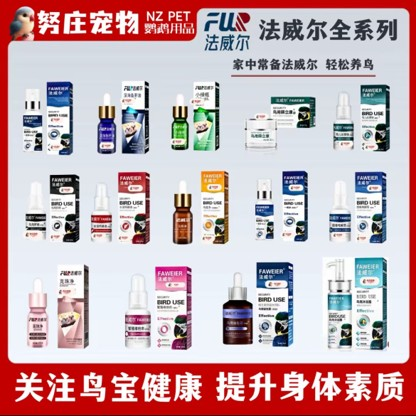
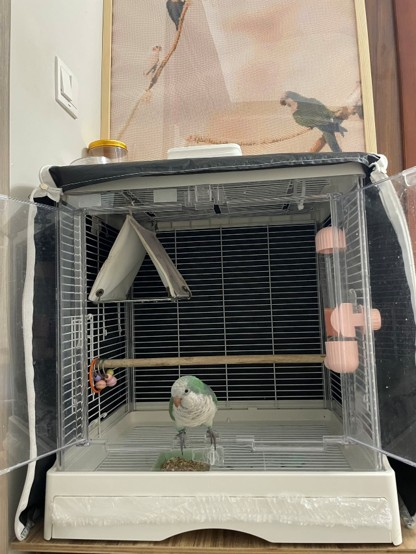

福康
珊瑚蓝和尚鹦鹉，温柔粘人，聪明伶俐，是中小型鹦鹉中的人气"网红亲人小明星"

珊瑚蓝和尚鹦鹉，温柔粘人，聪明伶俐，是中小型鹦鹉中的人气"网红亲人小明星"
颜值可爱，福康是一只珊瑚蓝和尚鹦鹉，羽毛呈现出灰蓝色调，与常见的绿色和尚鹦鹉截然不同。珊瑚蓝是和尚鹦鹉中非常受欢迎的变异色，整体色调淡雅清新，胸腹部带有浅灰白渐层，翅膀内侧透着淡淡的蓝绿色光泽，给人一种温柔干净的视觉感受。搭配圆润的身型和灵动的眼神，福康无论在哪里都像一个小艺术品。
粘人温柔，情绪稳定，活泼可爱，学习能力强，互动性好。


定期用柠檬水给福康洗澡，帮助去除羽毛污垢，保持羽毛光泽和皮肤健康
夏天注意通风降温避免阳光直射，冬天室温保持20到28度之间防止受凉
保持笼舍清洁干净预防疾病，清洗食盆水盆定期消毒
每天至少陪伴一到两小时，多互动多说话，避免产生拔毛等抑郁行为
通常3～6个月开始练习发音，初期可能会被误认为噪音，还会摇头晃脑，需要耐心引导。初期需建立信任感关系，待适应人与环境后再进行语言训练，重复训练，最好固定时间，教些清晰词汇「你好、吃饭、妈妈、哥哥、姐姐」之类。中小型鹦鹉中和尚是有组织短语模仿的，只是发音会有点含糊，每一只学习与发音清晰度因鸟而异。
福康从2个半月开始接回家，适应环境后从简单词汇开始教：日常用语（你好、妈妈、早上好等），生活场景词（吃饭），还有趣味指令、语调模仿，教的都是普通话，也有一些环境关联词等等……福康第一次开声就进入说教模式了。三个月就学会几个词汇，到现在1.5岁已掌握100+词汇。

第一次大换羽（幼鸟换成年毛）：3～6个月大，胎毛脱落长出成鸟羽毛，持续1～2个月
成年鸟每年常规换羽：主换羽期春季（3～5月）、秋季（9～11月），一次完整换羽1到3个月
掉毛变多，笼底身上到处是毛屑
有点烦躁、爱咬毛、爱挠
食量变大、爱睡觉、不爱玩
新毛长出时会有血羽管（尖尖的小毛管）
多给高蛋白：滋养丸、蛋粮、少量熟蛋黄
补钙：墨鱼骨、钙粉
别吹风、别洗澡太勤，容易着凉
别抓、别拽血羽，会流血疼
⚠️ 不正常掉毛要警惕 —— 掉光一块露皮肤、一直狂咬毛流血、精神差拉稀不吃饭，这不是换羽，是生病/焦虑/寄生虫，请及时就医。